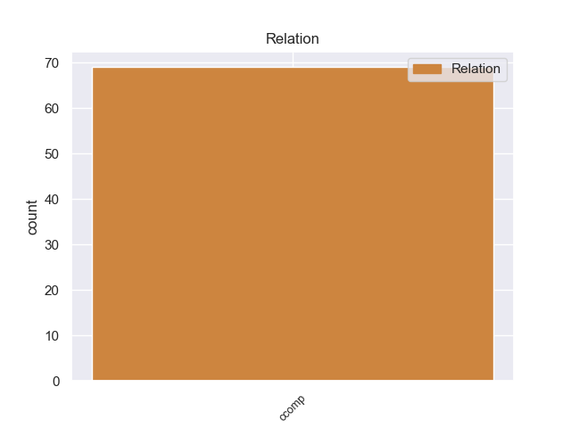
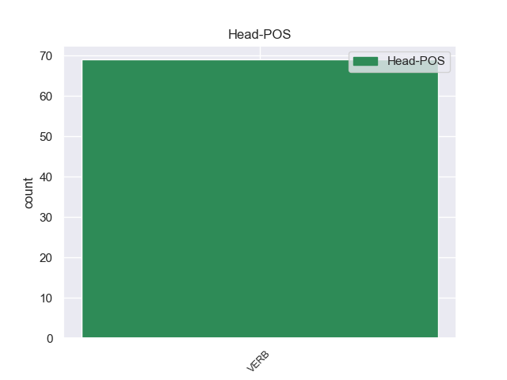
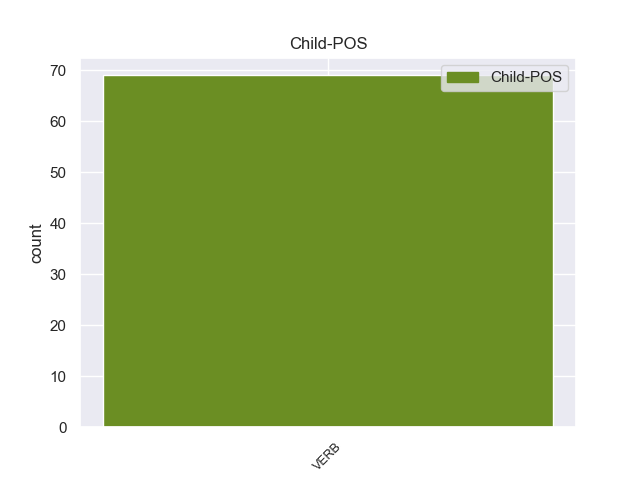

Distribution of features within this leaf



Agreement Rules sorted by frequency.
- When the dependent token is the clausal complement(ccomp) of the head token, and the dependent token is VERB.
1 La _ _ _ _ 0 _ _ _
2 cadena _ _ _ _ 0 _ _ _
3 Al _ _ _ _ 0 _ _ _
4 Yazira _ _ _ _ 0 _ _ _
5 afirma afirmar VERB _ Mood=Ind|Number=Sing|Person=3|Tense=Pres|VerbForm=Fin 0 _ _ _
6 que _ _ _ _ 0 _ _ _
7 hay haber VERB _ Mood=Ind|Number=Sing|Person=3|Tense=Pres|VerbForm=Fin 5 ccomp _ _
8 95 _ _ _ _ 0 _ _ _
9 muertos _ _ _ _ 0 _ _ _
10 . _ _ _ _ 0 _ _ _
Disagree Examples:
1 El _ _ _ _ 0 _ _ _
2 7 _ _ _ _ 0 _ _ _
3 de _ _ _ _ 0 _ _ _
4 agosto _ _ _ _ 0 _ _ _
5 de _ _ _ _ 0 _ _ _
6 2010 _ _ _ _ 0 _ _ _
7 , _ _ _ _ 0 _ _ _
8 un _ _ _ _ 0 _ _ _
9 impacto _ _ _ _ 0 _ _ _
10 de _ _ _ _ 0 _ _ _
11 un _ _ _ _ 0 _ _ _
12 Explosivo _ _ _ _ 0 _ _ _
13 Improvisado _ _ _ _ 0 _ _ _
14 a _ _ _ _ 0 _ _ _
15 un _ _ _ _ 0 _ _ _
16 CV9035DK _ _ _ _ 0 _ _ _
17 en _ _ _ _ 0 _ _ _
18 Afganistán _ _ _ _ 0 _ _ _
19 dejó dejar VERB _ Mood=Ind|Number=Sing|Person=3|Tense=Past|VerbForm=Fin 0 _ _ _
20 como _ _ _ _ 0 _ _ _
21 saldo _ _ _ _ 0 _ _ _
22 que _ _ _ _ 0 _ _ _
23 dos _ _ _ _ 0 _ _ _
24 de _ _ _ _ 0 _ _ _
25 los _ _ _ _ 0 _ _ _
26 soldados _ _ _ _ 0 _ _ _
27 que _ _ _ _ 0 _ _ _
28 tripulaban _ _ _ _ 0 _ _ _
29 uno _ _ _ _ 0 _ _ _
30 de _ _ _ _ 0 _ _ _
31 estos _ _ _ _ 0 _ _ _
32 blindados _ _ _ _ 0 _ _ _
33 murieran murir VERB _ Mood=Sub|Number=Plur|Person=3|Tense=Imp|VerbForm=Fin 19 ccomp _ _
34 y _ _ _ _ 0 _ _ _
35 3 _ _ _ _ 0 _ _ _
36 resultaran _ _ _ _ 0 _ _ _
37 heridos _ _ _ _ 0 _ _ _
38 . _ _ _ _ 0 _ _ _
1 Sin _ _ _ _ 0 _ _ _
2 embargo _ _ _ _ 0 _ _ _
3 dijo decir VERB _ Mood=Ind|Number=Sing|Person=3|Tense=Past|VerbForm=Fin 0 _ _ _
4 que _ _ _ _ 0 _ _ _
5 ahora _ _ _ _ 0 _ _ _
6 están estar VERB _ Mood=Ind|Number=Plur|Person=3|Tense=Pres|VerbForm=Fin 3 ccomp _ _
7 " _ _ _ _ 0 _ _ _
8 en _ _ _ _ 0 _ _ _
9 un _ _ _ _ 0 _ _ _
10 nivel _ _ _ _ 0 _ _ _
11 aceptable _ _ _ _ 0 _ _ _
12 " _ _ _ _ 0 _ _ _
13 y _ _ _ _ 0 _ _ _
14 que _ _ _ _ 0 _ _ _
15 se _ _ _ _ 0 _ _ _
16 podrán _ _ _ _ 0 _ _ _
17 agilizar _ _ _ _ 0 _ _ _
18 esas _ _ _ _ 0 _ _ _
19 entregas _ _ _ _ 0 _ _ _
20 de _ _ _ _ 0 _ _ _
21 alimentos _ _ _ _ 0 _ _ _
22 , _ _ _ _ 0 _ _ _
23 medicinas _ _ _ _ 0 _ _ _
24 , _ _ _ _ 0 _ _ _
25 agua _ _ _ _ 0 _ _ _
26 y _ _ _ _ 0 _ _ _
27 ropa _ _ _ _ 0 _ _ _
28 . _ _ _ _ 0 _ _ _
1 Las _ _ _ _ 0 _ _ _
2 problemáticas _ _ _ _ 0 _ _ _
3 contemporáneas _ _ _ _ 0 _ _ _
4 fundadas _ _ _ _ 0 _ _ _
5 en _ _ _ _ 0 _ _ _
6 la _ _ _ _ 0 _ _ _
7 sostenibilidad _ _ _ _ 0 _ _ _
8 ( _ _ _ _ 0 _ _ _
9 escasez _ _ _ _ 0 _ _ _
10 de _ _ _ _ 0 _ _ _
11 recursos _ _ _ _ 0 _ _ _
12 naturales _ _ _ _ 0 _ _ _
13 como _ _ _ _ 0 _ _ _
14 el _ _ _ _ 0 _ _ _
15 petróleo _ _ _ _ 0 _ _ _
16 , _ _ _ _ 0 _ _ _
17 el _ _ _ _ 0 _ _ _
18 calentamiento _ _ _ _ 0 _ _ _
19 global _ _ _ _ 0 _ _ _
20 y _ _ _ _ 0 _ _ _
21 la _ _ _ _ 0 _ _ _
22 calidad _ _ _ _ 0 _ _ _
23 de _ _ _ _ 0 _ _ _
24 vida _ _ _ _ 0 _ _ _
25 en _ _ _ _ 0 _ _ _
26 las _ _ _ _ 0 _ _ _
27 ciudades _ _ _ _ 0 _ _ _
28 ) _ _ _ _ 0 _ _ _
29 ha _ _ _ _ 0 _ _ _
30 hecho hacer VERB _ Gender=Masc|Number=Sing|Tense=Past|VerbForm=Part 0 _ _ _
31 que _ _ _ _ 0 _ _ _
32 esta _ _ _ _ 0 _ _ _
33 disciplina _ _ _ _ 0 _ _ _
34 cambie cambiar VERB _ Mood=Sub|Number=Sing|Person=3|Tense=Pres|VerbForm=Fin 30 ccomp _ _
35 hacia _ _ _ _ 0 _ _ _
36 una _ _ _ _ 0 _ _ _
37 visión _ _ _ _ 0 _ _ _
38 multidisciplinaria _ _ _ _ 0 _ _ _
39 de _ _ _ _ 0 _ _ _
40 el _ _ _ _ 0 _ _ _
41 transporte _ _ _ _ 0 _ _ _
42 , _ _ _ _ 0 _ _ _
43 donde _ _ _ _ 0 _ _ _
44 el _ _ _ _ 0 _ _ _
45 transporte _ _ _ _ 0 _ _ _
46 público _ _ _ _ 0 _ _ _
47 y _ _ _ _ 0 _ _ _
48 el _ _ _ _ 0 _ _ _
49 transporte _ _ _ _ 0 _ _ _
50 en _ _ _ _ 0 _ _ _
51 modos _ _ _ _ 0 _ _ _
52 activos _ _ _ _ 0 _ _ _
53 ( _ _ _ _ 0 _ _ _
54 bicicletas _ _ _ _ 0 _ _ _
55 y _ _ _ _ 0 _ _ _
56 peatones _ _ _ _ 0 _ _ _
57 ) _ _ _ _ 0 _ _ _
58 ha _ _ _ _ 0 _ _ _
59 cobrado _ _ _ _ 0 _ _ _
60 una _ _ _ _ 0 _ _ _
61 inmensa _ _ _ _ 0 _ _ _
62 importancia _ _ _ _ 0 _ _ _
63 . _ _ _ _ 0 _ _ _
1 " _ _ _ _ 0 _ _ _
2 No _ _ _ _ 0 _ _ _
3 me _ _ _ _ 0 _ _ _
4 lo _ _ _ _ 0 _ _ _
5 esperaba esperar VERB _ Mood=Ind|Number=Sing|Person=3|Tense=Imp|VerbForm=Fin 8 ccomp _ SpaceAfter=No
6 " _ _ _ _ 0 _ _ _
7 , _ _ _ _ 0 _ _ _
8 dijo decir VERB _ Mood=Ind|Number=Sing|Person=3|Tense=Past|VerbForm=Fin 0 _ _ _
9 el _ _ _ _ 0 _ _ _
10 técnico _ _ _ _ 0 _ _ _
11 de _ _ _ _ 0 _ _ _
12 el _ _ _ _ 0 _ _ _
13 United _ _ _ _ 0 _ _ _
14 Alex _ _ _ _ 0 _ _ _
15 Ferguson _ _ _ _ 0 _ _ _
16 . _ _ _ _ 0 _ _ _
1 El _ _ _ _ 0 _ _ _
2 presidente _ _ _ _ 0 _ _ _
3 de _ _ _ _ 0 _ _ _
4 la _ _ _ _ 0 _ _ _
5 comisión _ _ _ _ 0 _ _ _
6 , _ _ _ _ 0 _ _ _
7 Fernando _ _ _ _ 0 _ _ _
8 Castro _ _ _ _ 0 _ _ _
9 Trenti _ _ _ _ 0 _ _ _
10 , _ _ _ _ 0 _ _ _
11 informó informar VERB _ Mood=Ind|Number=Sing|Person=3|Tense=Past|VerbForm=Fin 0 _ _ _
12 que _ _ _ _ 0 _ _ _
13 antes _ _ _ _ 0 _ _ _
14 de _ _ _ _ 0 _ _ _
15 confirmar _ _ _ _ 0 _ _ _
16 la _ _ _ _ 0 _ _ _
17 fecha _ _ _ _ 0 _ _ _
18 de _ _ _ _ 0 _ _ _
19 forma _ _ _ _ 0 _ _ _
20 definitiva _ _ _ _ 0 _ _ _
21 dialogará dialogar VERB _ Mood=Ind|Number=Sing|Person=3|Tense=Fut|VerbForm=Fin 11 ccomp _ _
22 con _ _ _ _ 0 _ _ _
23 Lozano _ _ _ _ 0 _ _ _
24 Alarcón _ _ _ _ 0 _ _ _
25 , _ _ _ _ 0 _ _ _
26 para _ _ _ _ 0 _ _ _
27 revisar _ _ _ _ 0 _ _ _
28 su _ _ _ _ 0 _ _ _
29 agenda _ _ _ _ 0 _ _ _
30 y _ _ _ _ 0 _ _ _
31 verificar _ _ _ _ 0 _ _ _
32 que _ _ _ _ 0 _ _ _
33 pueda _ _ _ _ 0 _ _ _
34 estar _ _ _ _ 0 _ _ _
35 ese _ _ _ _ 0 _ _ _
36 día _ _ _ _ 0 _ _ _
37 . _ _ _ _ 0 _ _ _